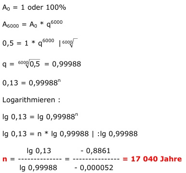

Aufgabe 198 Das Alter von Holz kann man durch die Aktivität von Kohlenstoffatomen im Holz bestimmen. Wie alt ist ein Holz, das noch eine Aktivität von 13% hat, wenn die Halbwertzeit des Kohlenstoffs 6 000 Jahre beträgt? 